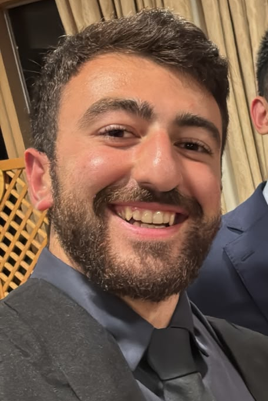

We are two medical students, from the University of Bristol and UCL, and we created this service to offer personalised, specialised preparation for UK medical school interviews.
Each student receives tailored sessions that go beyond what general guides can offer. We explore interview topics in real depth—from medical ethics and the NHS to communication skills and motivation for medicine. Our aim is for students to walk into their interviews understanding the material, rather than reciting it.
We value the relationships we build with our students, and our support does not end on interview day. As we progress through our own training, we hope to stay in touch—offering mentorship, guidance through medical school, and advice on specialty portfolios and research publications. We are here for the long term.
Hi there, I am Kin—a 3rd Year at UCL Medicine with an intercalated BSc in Medical Anthropology. As a future Psychiatrist, I plan to pioneer culturally specific therapies and facilitate international knowledge exchange.
I scored 3000 in my UCAT (Band 2, top 5%) and received offers from UCL and Southampton (rejected King's before they gave me an offer). Through time-optimisation and structured prep, I achieved eleven 9s at GCSE and A*A*A*A*A* at A-Level.
I have taught 150+ hours in small groups at a tuition center and in A-Level Maths + Chem. Uncountable hours I spent mentoring presenters at the Medical Discussion Group I founded for the college. Realising how alive I felt in teaching, I expanded into mentoring students through medical school interviews.
With the life experience and intuition I gained from travelling 15+ months across South Asia and the Middle East, I pick up on subtle communication cues and provide rare feedback that your teachers/ friends missed. Together, we will build custom resources and plans for all areas of your preparation. Let's collaborate in your success!
My name is Mete, and I am a 3rd Year Medical Student at the University of Bristol, with an ambition to become a Trauma and Orthopaedic Surgeon.
I scored 2960 in the UCAT (Band 1, top 6%) and received offers from Bristol, Sheffield, and Liverpool. At Bristol, I scored 89/100 in my end of year exams (top 5% cohort commendation) and was awarded the top prize for the Student Choice Essay. Prior to university, I achieved ten grade 9s at GCSE and A*AAA at A-Level.
I have delivered over 300 hours of GCSE and A-Level Maths tutoring, alongside extensive informal tutoring with family and friends. Medical interview tutoring allows me to combine my teaching experience with my own recent experience of the application process, offering students the committed, personal support every applicant deserves.
My sessions focus on understanding over memorisation—encouraging students to think out loud to build clear, structured reasoning. Above all, I will ensure every student feels confident and well prepared. If you are looking for a tutor invested in your success, I would love to hear from you.